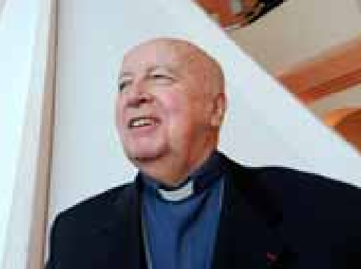

Landes
Monseigneur Breton est mort
Monseigneur Philippe Breton. PHOTO ARCHIVES LOÏC DEQUIER
Religion - Ancien évêque du diocèse d’Aire et de Dax, il s’est éteint à 84 ans, mercredi 29 avril
Natif de Rouen, ordonné prêtre en 1966, Mgr Breton n'est plus. Il avait été à la tête du diocèse de 2002 à 2012. " Monseigneur Philippe Breton est décédé ce mercredi 29 avril, à la maison Sainte-Thérèse de Paris ", a indiqué, dans un communiqué, l'actuel évêque du diocèse d'Aire et de Dax, Monseigneur Souchu.
Dans un long entretien, publié en 2012, au moment de son départ, l'homme d'Église était revenu sur sa relation avec les Landes et ses habitants. " C'est un diocèse formidable. Les Landais sont très épris de leur histoire et de leurs traditions. Quand quelqu'un arrive de l'extérieur pour occuper une responsabilité jugée importante, il y a toujours des interrogations. Mais les Landais et moi avons fait tous les efforts nécessaires pour nous comprendre et nous rapprocher. J'ai vécu très heureux ici."
Ses obsèques se dérouleront mardi 5 mai, à 10 h 30, à l'église de Saint Germain l'Auxerrois, à Paris.
Par Romain Barucq
Publié le 30/04/2020